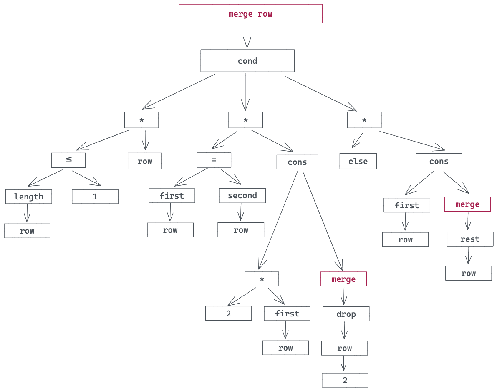
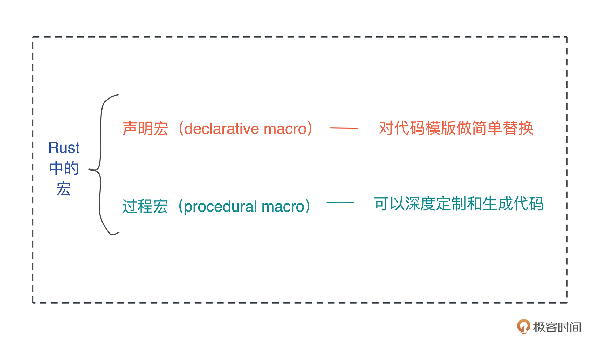
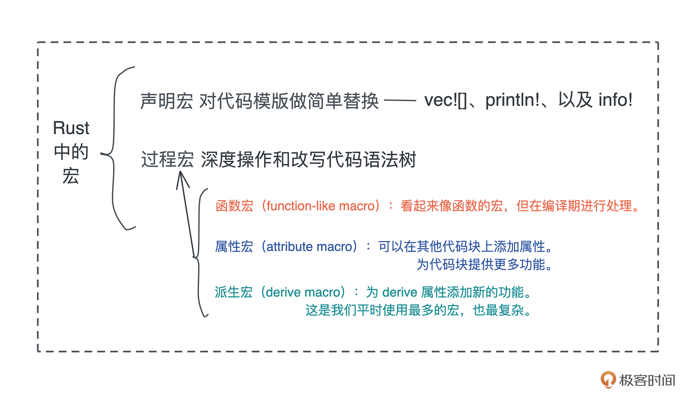

- 00 开篇词 让Rust成为你的下一门主力语言.md.html
- 01 内存：值放堆上还是放栈上，这是一个问题.md.html
- 02 串讲：编程开发中，那些你需要掌握的基本概念.md.html
- 03 初窥门径：从你的第一个Rust程序开始！.md.html
- 04 get hands dirty：来写个实用的CLI小工具.md.html
- 05 get hands dirty：做一个图片服务器有多难？.md.html
- 06 get hands dirty：SQL查询工具怎么一鱼多吃？.md.html
- 07 所有权：值的生杀大权到底在谁手上？.md.html
- 08 所有权：值的借用是如何工作的？.md.html
- 09 所有权：一个值可以有多个所有者么？.md.html
- 10 生命周期：你创建的值究竟能活多久？.md.html
- 11 内存管理：从创建到消亡，值都经历了什么？.md.html
- 12 类型系统：Rust的类型系统有什么特点？.md.html
- 13 类型系统：如何使用trait来定义接口？.md.html
- 14 类型系统：有哪些必须掌握的trait？.md.html
- 15 数据结构：这些浓眉大眼的结构竟然都是智能指针？.md.html
- 16 数据结构：Vec_T_、&[T]、Box_[T]_ ，你真的了解集合容器么？.md.html
- 17 数据结构：软件系统核心部件哈希表，内存如何布局？.md.html
- 18 错误处理：为什么Rust的错误处理与众不同？.md.html
- 19 闭包：FnOnce、FnMut和Fn，为什么有这么多类型？.md.html
- 20 4 Steps ：如何更好地阅读Rust源码？.md.html
- 21 阶段实操（1）：构建一个简单的KV server-基本流程.md.html
- 22 阶段实操（2）：构建一个简单的KV server-基本流程.md.html
- 23 类型系统：如何在实战中使用泛型编程？.md.html
- 24 类型系统：如何在实战中使用trait object？.md.html
- 25 类型系统：如何围绕trait来设计和架构系统？.md.html
- 26 阶段实操（3）：构建一个简单的KV server-高级trait技巧.md.html
- 27 生态系统：有哪些常有的Rust库可以为我所用？.md.html
- 28 网络开发（上）：如何使用Rust处理网络请求？.md.html
- 29 网络开发（下）：如何使用Rust处理网络请求？.md.html
- 30 Unsafe Rust：如何用C++的方式打开Rust？.md.html
- 31 FFI：Rust如何和你的语言架起沟通桥梁？.md.html
- 32 实操项目：使用PyO3开发Python3模块.md.html
- 33 并发处理（上）：从atomics到Channel，Rust都提供了什么工具？.md.html
- 34 并发处理（下）：从atomics到Channel，Rust都提供了什么工具？.md.html
- 35 实操项目：如何实现一个基本的MPSC channel？.md.html
- 36 阶段实操（4）：构建一个简单的KV server-网络处理.md.html
- 37 阶段实操（5）：构建一个简单的KV server-网络安全.md.html
- 38 异步处理：Future是什么？它和async_await是什么关系？.md.html
- 39 异步处理：async_await内部是怎么实现的？.md.html
- 40 异步处理：如何处理异步IO？.md.html
- 41 阶段实操（6）：构建一个简单的KV server-异步处理.md.html
- 42 阶段实操（7）：构建一个简单的KV server-如何做大的重构？.md.html
- 43 生产环境：真实世界下的一个Rust项目包含哪些要素？.md.html
- 44 数据处理：应用程序和数据如何打交道？.md.html
- 45 阶段实操（8）：构建一个简单的KV server-配置_测试_监控_CI_CD.md.html
- 46 软件架构：如何用Rust架构复杂系统？.md.html
- 加餐 Rust2021版次问世了！.md.html
- 加餐 代码即数据：为什么我们需要宏编程能力？.md.html
- 加餐 宏编程（上）：用最“笨”的方式撰写宏.md.html
- 加餐 宏编程（下）：用 syn_quote 优雅地构建宏.md.html
- 加餐 愚昧之巅：你的Rust学习常见问题汇总.md.html
- 加餐 期中测试：参考实现讲解.md.html
- 加餐 期中测试：来写一个简单的grep命令行.md.html
- 加餐 这个专栏你可以怎么学，以及Rust是否值得学？.md.html
- 大咖助场 开悟之坡（上）：Rust的现状、机遇与挑战.md.html
- 大咖助场 开悟之坡（下）：Rust的现状、机遇与挑战.md.html
- 特别策划 学习锦囊（一）：听听课代表们怎么说.md.html
- 特别策划 学习锦囊（三）：听听课代表们怎么说.md.html
- 特别策划 学习锦囊（二）：听听课代表们怎么说.md.html
- 用户故事 绝望之谷：改变从学习开始.md.html
- 用户故事 语言不仅是工具，还是思维方式.md.html
- 结束语 永续之原：Rust学习，如何持续精进？.md.html
- 捐赠
加餐 代码即数据：为什么我们需要宏编程能力？
你好，我是陈天。
应广大同学的呼吁，今天我们来讲讲宏编程。
最初设计课程的时候考虑知识点的系统性，Rust 的元编程能力声明宏、过程宏各安排了一讲，但宏编程是高阶内容后来删减掉了。其实如果你初步学习Rust，不用太深究宏，大多数应用的场景，你会使用标准库或者第三方库提供的宏就行。不会做宏编程，并不影响你日常的开发。
不过很多同学对宏有兴趣，我们今天就深入聊一聊。在讲如何使用宏、如何构建宏之前，我们要先搞清楚为什么会出现宏。
为什么我们需要宏编程能力？
我们从设计非常独特的Lisp语言讲起。在 Lisp 的世界里，有句名言：代码即数据，数据即代码（Code is data, data is code）。
如果你有一点 Lisp 相关的开发经验，或者听说过任何一种 Lisp 方言，你可能知道，和普通编程语言不同的是，Lisp 的语言直接把 AST（抽象语法树）暴露给开发者，开发者写的每一行代码，其实就是在描述这段代码的 AST。
这个特点如果你没有太看明白，我们结合一个具体例子来理解。这段代码是 6 年前，2048 游戏很火的时候，我用 Lisp 的一种方言 Racket 撰写的2048 的实现片段：
; e.g. '(2 2 2 4 4 4 8) -> '(4 2 8 4 8)
(define (merge row)
(cond [(<= (length row) 1) row]
[(= (first row) (second row))
(cons (* 2 (first row)) (merge (drop row 2)))]
[else (cons (first row) (merge (rest row)))]))
这段代码的算法不难理解，给定一个 row：
- 如果它只有一个值，那么直接返回；
- 如果头两个元素相等，那么把第一个元素乘以 2，与头两个元素之后的所有元素 merge 的结果（此处有递归），组成一个新的 list 返回；
- 否则，就把第一个元素和之后的所有元素 merge 的结果组成一个新的 list 返回（此处也是递归）。
看着这段代码，相信只要你花些耐心就可以写出对应的语法树：

你会发现，撰写 Lisp 代码，就相当于直接在描述语法树。
从语法树的角度看，编程语言其实也没有什么了不起的，它操作和执行的数据结构不过就是这样的一棵棵树，就跟我们开发者平日里编程操作的各种数据结构一样。
如果一门编程语言把它在解析过程中产生的语法树暴露给开发者，允许开发者对语法树进行裁剪和嫁接这样移花接木的处理，那么这门语言就具备了元编程的能力。
语言对这样处理的限制越少，元编程的能力就越强，当然作为一枚硬币的反面，语言就会过度灵活，无法无天，甚至反噬语言本身；反之，语言对开发者操作语法树的限制越多，元编程能力就越弱，语言虽然丧失了灵活性，但是更加规矩。
Lisp 语言，作为元编程能力的天花板，毫无保留地把语法树像数据一样敞露给开发者，让开发者不光在编译期，甚至在运行期，都可以随意改变代码的行为，这也是Lisp“代码即数据，数据即代码”思路的直接体现。
在《黑客与画家》一书里（p196），PG 引用了“格林斯潘第十定律”：
任何C或Fortran程序复杂到一定程度之后，都会包含一个临时开发的、只有一半功能的、不完全符合规格的、到处都是bug的、运行速度很慢的Common Lisp实现。
虽然这是 Lisp 拥趸对其他语言的极尽嘲讽，不过也说明了一个不争的事实：一门设计再精妙、提供再丰富生态的语言，在实际的使用场景中，都不可避免地需要具备某种用代码生成代码的能力，来大大减轻开发者不断撰写结构和模式相同的重复脚手架代码的需求。
幸运的是，Rust 这门语言提供了足够强大的宏编程能力，让我们在需要的时候，可以通过撰写宏来避免重复的脚手架代码，同时，Rust 对宏的使用还有足够的限制，在保证灵活性的前提下，防止我们过度使用让代码失控。
那Rust到底提供了哪些宏呢？
Rust 对宏编程有哪些支持？
在过去的课程中，我们经历了各种各样的宏，比如创建 Vec#[derive(Debug, Default, ...)]、条件编译时使用的 #[cfg(test)] 宏等等。
其实Rust中的宏就两大类：对代码模板做简单替换的声明宏（declarative macro）、可以深度定制和生成代码的过程宏（procedural macro）。- 
声明宏
首先是声明宏（declarative macro），课程里出现过的比如像 vec![]、println!、以及 info!，它们都是声明宏。
声明宏可以用 macro_rules! 来描述，我们看一个常用的 tracing log 的宏定义（代码）：
macro_rules! __tracing_log {
(target: $target:expr, $level:expr, $($field:tt)+ ) => {
$crate::if_log_enabled! { $level, {
use $crate::log;
let level = $crate::level_to_log!($level);
if level <= log::max_level() {
let log_meta = log::Metadata::builder()
.level(level)
.target($target)
.build();
let logger = log::logger();
if logger.enabled(&log_meta) {
logger.log(&log::Record::builder()
.file(Some(file!()))
.module_path(Some(module_path!()))
.line(Some(line!()))
.metadata(log_meta)
.args($crate::__mk_format_args!($($field)+))
.build());
}
}
}}
};
}
可以看到，它主要做的就是通过简单的接口，把不断重复的逻辑包装起来，然后在调用的地方展开而已，不涉及语法树的操作。
如果你用过 C/C++，那么Rust的声明宏和 C/C++ 里面的宏类似，承载同样的目的。只不过 Rust 的声明宏更加安全，你无法在需要出现标识符的地方出现表达式，也无法让宏内部定义的变量污染外部的世界。比如在 C 中，你可以这样声明一个宏：
#define MUL(a, b) a * b
这个宏是期望调用者传入两个标识符，执行这两个标识符对应值的乘法操作，但实际我们可以对 a 传入 1 + 2，对 b 传入 4 - 3，导致结果完全错误。
过程宏
除了做简单替换的声明宏，Rust 还支持允许我们深度操作和改写 Rust 代码语法树的过程宏（procedural macro），更加灵活，更为强大。
Rust 的过程宏分为三种：
- 函数宏（function-like macro）：看起来像函数的宏，但在编译期进行处理。比如我们之前用过的 sqlx 里的 query 宏，它内部展开出一个 expand_query 函数宏。你可能想象不到，看上去一个简单的 query 处理，内部有多么庞大的代码结构。
- 属性宏（attribute macro）：可以在其他代码块上添加属性，为代码块提供更多功能。比如 rocket 的 get/put 等路由属性。
- 派生宏（derive macro）：为 derive 属性添加新的功能。这是我们平时使用最多的宏，比如
#[derive(Debug)]为我们的数据结构提供 Debug trait 的实现、#[derive(Serialize, Deserialize)]为我们的数据结构提供 serde 相关 trait 的实现。

什么情况可以用宏
前面讲过，宏的主要作用是避免我们创建大量结构相同的脚手架代码。那么我们在什么情况下可以使用宏呢？
首先说声明宏。如果重复性的代码无法用函数来封装，那么声明宏就是一个好的选择，比如 Rust 早期版本中的try!，它是? 操作符的前身。
再比如 futures 库的ready! 宏：
#[macro_export]
macro_rules! ready {
($e:expr $(,)?) => {
match $e {
$crate::task::Poll::Ready(t) => t,
$crate::task::Poll::Pending => return $crate::task::Poll::Pending,
}
};
}
这样的结构，因为涉及提早 return，无法用函数封装，所以用声明宏就很简洁。
过程宏里，先说最复杂的派生宏，因为派生宏会在特定的场景使用，所以如果你有需要可以使用。
比如一个数据结构，我们希望它能提供 Debug trait 的能力，但为自己定义的每个数据结构实现 Debug trait 太过繁琐，而且代码所做的操作又都是一样的，这时候就可以考虑使用派生宏来简化这个操作。
一般来说，如果你定义的 trait 别人实现起来有固定的模式可循，那么可以考虑为其构建派生宏。serde 在 Rust 的世界里这么流行、这么好用，很大程度上也是因为基本上你的数据结构只需要添加 #[derive(Serialize, Deserialize)]，就可以轻松序列化成 JSON、YAML 等好多种类型（或者从这些类型中反序列化）。
函数宏和属性宏并没有特定的使用场景。sqlx 用函数宏来处理 SQL query、tokio 使用属性宏 #[tokio::main] 来引入 runtime。它们可以帮助目标代码的实现逻辑变得更加简单，但一般除非特别必要，否则我并不推荐写。
好，学到这里你已经了解了足够多的关于宏的基础知识，欢迎在留言区交流你对宏的理解。
如果你对撰写宏有兴趣，下一讲我们会手写声明宏和过程宏来深入理解宏到底做了什么。我们下一讲见！
© 2019 - 2023 Liangliang Lee. Powered by gin and hexo-theme-book.